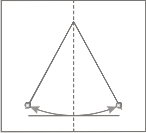
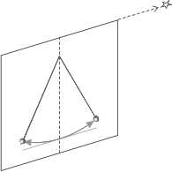
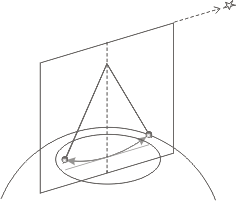
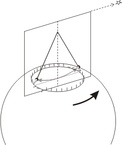

|
PÉNDULO DE FOUCAULT
EXPLICACIÓN SENCILLA DEL PRINCIPIO DE FUNCIONAMIENTO
|
| |
|  |
|
El péndulo -como cualquier otro péndulo- oscila, y el movimiento, tanto de la
masa como del hilo, queda incluido en un
plano vertical e inmóvil.
Nadie sabe por qué ese plano de oscilación se queda inmóvil, pero estamos seguros de que así ocurre. Es parte de lo que llamamos principio de inercia. |
| |
|
|
|  |
|
Acá vemos el plano inmóvil en perspectiva.
En el mismo plano de oscilación, muy lejos, habrá alguna estrella del cielo -siempre hay alguna- y, como la estrella es inmóvil, seguirá siendo apuntada (incluida) por el plano de oscilación. |
| | |
|
|  |
|
En este esquema se muestra el péndulo
oscilando, el plano de oscilación inmóvil -siempre apuntando hacia la misma estrella- la tarima o plataforma, y la Tierra. |
| | |
|
|  |
|
Pero la Tierra no está inmóvil, sino que gira
-como todo el mundo sabe- dando una vuelta
completa cada 24 horas. A medida que
la Tierra rota lentamente debajo suyo, el péndulo le va
volteando los testigos de paso parados en la
tarima. Nosotros no nos damos cuenta del
movimiento terrestre; en cambio, nos parece
que lo que gira es el plano de oscilación
del péndulo (del mismo modo que nos parece que todo el cielo con sus estrellas gira a nuestro alrededor).
No afecta para nada que el punto de suspensión en el techo también gire con la Tierra: el plano de oscilación se mantiene indiferente a cualquier cosa.
En Buenos Aires, nos parece que diera una vuelta completa en 42 horas. En los polos parece girar en 24 horas, y en el ecuador no funciona. |
| |
|
|
| Algunos derechos reservados.
Se permite su reproducción citando la fuente. Última actualización oct-06. Buenos Aires, Argentina. |
|
|